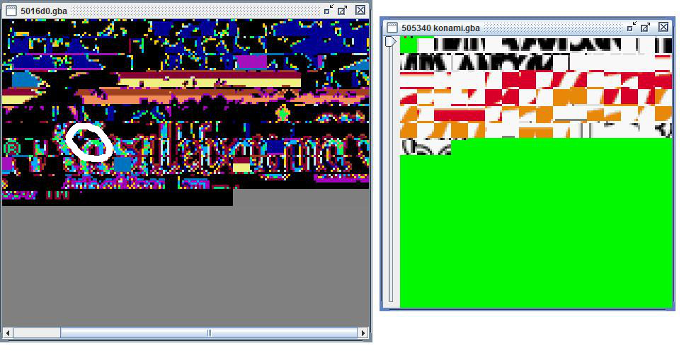
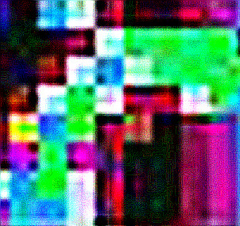

Labo 4: GBA Tilesets, een simpel spel
In labo 3 maakten we kennis met de Gameboy Advance en het ontwikkelplatform - als je het zo kan noemen. We gebruikten mode 3 om pixels te manipuleren. Natuurlijk is dat erg onpraktisch en veel te belastend wanneer er veel op het scherm getekend moet worden. Als doelstelling voor labo 4 willen we een simpel geïntegreerd spelletje maken waar we video mode 1 en tilesets voor nodig hebben.
Het overzicht van I/O registers leert ons dat 0x06000000 - 0x06017FFF 96kb aan Video RAM of VRAM voorziet waar we mee kunnen spelen zonder pixel per pixel te manipuleren.
Tileset modes
Rechtstreekse pixels aanspreken is flexibel maar niet bepaald handig. De GBA kan hardwarematig “tiles” zelf renderen zonder trailing pixels na te laten: wij moeten bij transformaties niet pixel per pixel zelf verplaatsen. Een beetje moderniteit in een embedded systeem dus.
Een “tile” is een 8x8 bitmap met 4 of 8 bits per pixel (bpp): 32 of 64 bytes in grootte. Herinner je dat voor de GBA we 15 bits nodig hebben om kleuren in een pixel op te slaan. 15 bits passen niet in die 4 of 8 bits! Daarvoor dienen kleurenpaletten die een kleur mappen op een index, met een maximum van 512. Het voorgrond palet register leeft op 0x05000000 -voor het achetgrond palet tel je 0x200 erbij.
Als je goed kijkt zie je in de eerste screenshot allemaal 8x8 tiles tegen elkaar geplakt die het titel scherm en het Konami logo voorstellen voor het spel Castlevania: Aria of Sorrow:

Dit is de tileset: de unieke collectie van alle 8x8 tiles die we nodig hebben om een achtergrond of sprite te renderen. Getekend op het scherm ziet dat er zoals verwacht zo uit:

Om tegen de GBA te zeggen welke tile op welke plaats in het scherm moet komen hebben we een tilemap nodig. Een tilemap kan wél heel groot worden en stelt letterlijk het “level” of de “map” voor, met op elke plaats in de 2-dimensionele lijst een referentie naar een tile. Zie Metroid Level voorbeeld.
Als we een deeltje van de “a” van Castlevania zoals aangeduid opblazen zie je duidelijk de 8x8 structuur:

Elke zichtbare bit stelt een kleur voor die in het palet is opgeslagen, aangeduid met een nummer als index: de tileindex. Merk op dat objecten die je ziet als je een spel speelt bijna altijd bestaan uit verschillende tiles. Elke tile wordt maar één keer opgeslagen en kan oneindig keren herhaald worden in de tile map. Bovenstaande “a” kan ruwweg vertaald worden naar deze tabel (eigen interpretatie):
| 1 | 5 | 4 | 3 | 3 | 3 | 3 | 6 |
| 1 | 1 | 3 | 4 | 2 | 2 | 2 | 2 |
| 1 | 1 | 4 | 5 | 4 | 2 | 2 | 2 |
| 3 | 4 | 2 | 4 | 3 | 3 | 4 | 2 |
| 7 | 5 | 2 | 3 | 3 | 1 | 3 | 6 |
| 6 | 2 | 6 | 3 | 1 | 1 | 3 | 6 |
| 5 | 2 | 4 | 3 | 1 | 1 | 3 | 6 |
| 5 | 5 | 4 | 3 | 1 | 1 | 3 | 6 |
| index | kleur |
|---|---|
| 1 | -> zwart |
| 2 | -> groen |
| 3 | -> rood |
| 4 | -> wit |
| 5 | -> blauw |
| 6 | -> paars (transparant) |
| 7 | -> geel |
We onderscheiden dus 4 belangrijke concepten om een image te renderen op de Gameboy Advance:
- Een 8x8 tile met indices die verwijzen naar het palet
- Een tileset waar alle tiles achter elkaar gepropt leven
- Een tilemap waar een image uit bestaat die verwijst naar indices in de set
- Een palet met kleuren
Images inladen in video RAM
Anders als in mode 3 kan je dus geen tiles mappen op pixels. Het VRAM voor tilesets werkt helemaal anders: het is opgesplitst in “character blocks” (voor image data, onze tileset) en “screen blocks” (tile map data). Per 8 screen blokken van 2kb is er één character block beschikbaar. Een char block is dus 16kb en kan 512 4bpp tiles opslaan - 6 in het heel VRAM in totaal dat inderdaad 96kb oplevert.
0x6000000 - 0x60003800] end subgraph char block 1 A --> B[screen blocks 8 - 15
0x6004000 - 0x60007800] end subgraph char block 2 B --> C[screen blocks 16 - 23
0x6008000 - 0x6000b800] end subgraph char block 3 C --> D[screen blocks 24 - 31
0x600c000 - 0x6000f800] end end subgraph sprite blocks subgraph char block 4 E[screen blocks 32 - 39
0x6010000 - 0x6013800] D --> E end subgraph char block 5 E --> F[screen blocks 40 - 47
0x6014000 - 0x60107800] end end
Character blocks 0 tot 3 (background RAM) worden gebruikt voor achtergrond, en 4 (0x6010000) tot 5 (0x6014000), Object VRAM (OVRAM), voor sprites. Het palet geheugen is ook opgesplitst in 2x16 voor achtergrond en sprites. We zijn voorlopig niet geïnteresseerd in de achtergrond: voor ons spel volstaan sprites. Tilemaps worden ook enkel gebruikt om grote images zoals een achtergrond te renderen, zoals het titelscherm en logo van Castlevania.
Om van char block naar char block te springen tellen we 0x4000 bij elke block (15de bit - 16kb). Om van screen block naar screen block te springen tellen we 0x800 bij elke block (16de bit, 2kb).
Merk op dat character block 0 en screen block 0 beiden naar adres 0x6000000 verwijzen! Dat wil zeggen dat als tilesets in char block 0 opgeslagen worden, we niet screen block 0 maar bijvoorbeeld 8 of 16 moeten gebruiken voor onze tilemap - opschuiven afhankelijk van de grootte van de tileset. Herinner je de gelijkenis tussen pointers en arrays uit labo 2.
Om het behandelen van deze hexadecimale adressen te vereenvoudigen kunnen we functies schrijven die het adres berekent van blokken zoals hier:
volatile unsigned short* char_block(unsigned long block) {
return (volatile unsigned short*) (0x6000000 + (block * 0x4000));
}
volatile unsigned short* screen_block(unsigned long block) {
return (volatile unsigned short*) (0x6000000 + (block * 0x800));
}Dat heeft als nadeel dat je moet weten dat char_block(4) een sprite block is en 0-3 niet, en dat je moet weten dat screen_block(8) bij char block 1 hoort. Dat tweede nadeel kunnen we wegwerken met typedefs en arrays zoals hier:
typedef unsigned short uint16;
typedef unsigned int uint32;
typedef struct { uint32 data[8]; } TILE, TILE4; // tile 8x8@4bpp: 32bytes; 8 ints
typedef TILE CHARBLOCK[512];
typedef uint16 SCREENBLOCK[1024];
#define MEM_VRAM 0x06000000
#define tile_mem ((CHARBLOCK*)MEM_VRAM)
#define se_mem ((SCREENBLOCK*)MEM_VRAM)Dat maakt het mogelijk om met TILE *ptr= &tile_mem[4][12] het OVRAM (block 4) op tile 12 aan te spreken en data te kopiëren zoals memcpy(&tile_mem[4][12], spriteData, sizeof(spriteData)).
De library LibTonc (source) voorziet een aantal defaults.
Sprites
Een sprite in Computer Graphics is een 2D image die deel is van een scene. De GBA kan sprite objecten voor ons renderen zonder dat wij alle pixels moeten manipuleren - dat moeten we dan nog aan zetten met bit 13 of 0x1000 in het controleregister.
De GBA voorziet een rudimentair object-model, “Object Attribute Memory” - zie specificaties. Een object heeft 3 sets van 16-bit attributen:
- 0: y coordinaat, vorm, 4 of 8 bpp mode
- 1: x coordinaat, grootte
- 2: tile index, welke kleur van het palet te gebruiken
Een combinatie van “vorm” en “grootte” eigenschappen bepalen de vorm van het object. Complexe vormen bestaan uit verschillende deelobjecten. We gaan het niet te ingewikkeld maken: prutsen met bits is al erg genoeg!
Om een een “object” te definiëren gebruiken we deze struct:
typedef struct object {
uint16 attr0;
uint16 attr1;
uint16 attr2;
uint16 unused;
} object;
#define OAM_MEM ((volatile object *)0x07000000)Objecten wegschrijven doen we in register 0x07000000. Omdat OAM_MEM een pointer is, kunnen we objecten met [] wegschrijven - herinner je dat de pointer index verschuiven hetzelfde als de array index is.
Een nieuw object maken is relatief simpel: volatile object *sprite = &OAM_MEM[0];. De attributen goed zetten is een ander paar mouwen omdat de bits in sets samengepakt zitten. De Tonc documentatie beschrijft elke bit van elk attribute in detail. We hebben bit 0 tot 7 voor de y coordinaat nodig, en bit 14 tot 15 voor de vorm (square = 00, wide = 10, tall = 01).
Als we willen starten op y coordinaat 50 met een wide object en 4bpp moeten we 50 omzetten naar 8 bits (gebruik deze converter) en bits 14 en 15 goed zetten: dat levert 1000000000110010 op, of 0x8032.
Alles samen zetten
Om deze low-level bit manipulaties in de code wat leesbaar te maken gebruiken we de voorziene typedefs en definities tile_mem, se_mem en oam_mem die hierboven zijn uitgelegd.
Een spel: Arkanoid
Laten we de basis leggen voor een Arkanoid clone op de GBA. We hebben een “paddle” nodig onderaan het scherm, dat is sprite #1. Daarnast moet er een balletje rondvliegen die blokjes raakt, dat is sprite #2. De blokjes zelf laten we voorlopig even achterwege.
Voor de gemakkelijkheid negeren we de (x,y) coordinaten in de attribute bits van de objecten bij de OAM initializatie - die zetten we daarna wel.
De bal
Een simpele 8x8 square sprite, dus 1 tile is voldoende. Kleur wit.
// 1. kleur
PALETTE_MEM[0][1] = color(31, 31, 31); // wit - zie labo 3
// 2. tile
volatile uint16 *ball_tile = (uint16*) TILE_MEM[4][1]; // 1 block
// vul de tile met de palet index 1 - dit is per rij, vandaar 0x1111
for(int i = 0; i < sizeof(tile_4bpp) / 2; i++) {
ball_tile[i] = 0x1111;
}
// 3. object
volatile object *ball_sprite = &OAM_MEM[0];
ball_sprite->attr0 = 0; // 4bpp, square
ball_sprite->attr1 = 0; // grootte 8x8 met square
ball_sprite->attr2 = 1; // eerste tile, palet 0Merk op dat TILE_MEM[4] betekent dat we de eerste 3 char of tile blocks overslaan: die dienen immers voor de achtergrond.
De paddle
Een horizontaal geörienteerde rechthoek (wide) die groter moet zijn dan onze bal, dus meer dan 1 tile zal in beslag nemen. Als we 4 ballen achter elkaar plakken krijgen we een 32x8 sprite. Kleur rood.
Omdat palet index #0 maar “bezet” is met één kleur (wit, van onze bal), kunnen we dat rood er bij steken, of kiezen voor een nieuw palet. Dat is het verschil tussen [0][2] (bestaand herbruiken, index 2) of [1][1] (nieuw palet, index 1).
// 1. kleur
PALETTE_MEM[0][2] = color(31, 0, 0);
// 2. tile - vanaf hieronder alles bezet tot TILE_MEM[4][6]!
volatile uint16 *paddle_tile = (uint16*) TILE_MEM[4][2]; // begin vanaf 2
// vul de tile met de palet index 2 - dit is per rij, vandaar 0x2222
for(int i = 0; i < 4 * sizeof(tile_4bpp) / 2; i++) {
paddle_tile[i] = 0x2222;
}
// 3. object
volatile object *paddle_sprite = &OAM_MEM[1];
paddle_sprite->attr0 = 0x4000; // 4bpp, wide
paddle_sprite->attr1 = 0x4000; // 32x8 met wide shape
paddle_sprite->attr2 = 2; // vanaf de 2de tile, palet 0Merk op dat voor attr1 (zie 8.4.2) de grootte bepaald wordt in combinatie met de sprite shape. 32x8 of 8x32 zou twee keer 0x4000 vereisen, alleen in attr0 op bit 15 en 16 een andere waarde.
Een OAM object verplaatsen
De x en y coordinaten zijn veruit de belangrijkste die dynamisch wijzigen gedurende het spel. Daarom verdienen deze hun eigen functie om gemanipuleerd te worden:
#define Y_MASK 0x0FF
#define X_MASK 0x1FF
void position(volatile object *obj, int x, int y) {
obj->attr0 = (obj->attr0 & ~Y_MASK) | (y & Y_MASK);
obj->attr1 = (obj->attr1 & ~X_MASK) | (x & X_MASK);
}We plakken de attribute waardes zonder huidige locatie vast aan de nieuwe locatie, geshift op de juiste plaats. In de game loop, waar onze bal logica zit, gebruiken we dit om de objecten te verplaatsen.
De game loop
De structuur van het spel ziet er als volgt uit:
- Initialiseer de juiste video registers.
- Maak objecten aan en alles wat daarbij komt kijken.
- Plaats op initiële positie.
- while true:
- vsync (??)
- Lees keys
- Herpositioneer. Collision, physics, …
Géén individueel VRAM meer aanspreken dankzij OAM, joepie… Er is nog slechts één probleempje: het plaatsen van objecten triggert een draw callback. We kunnen objecten niet halverwege het drawen verplaatsen, dan krijgen we “tearing”: de helft is maar getekend! Om deze synchronizatie problemen te vermijden, moeten we wachten tot de GBA zijn display refresh klaar is.
VBlanking
De GBA tekent lijn per lijn op het scherm, en wij hebben ruimte om iets te doen tussenin. Er is echter méér ruimte nadat het hele scherm refreshed is: die ruimte heet een “V-Blank”. Tekenen zelf is een V-Draw.
Er zijn (natuurlijk) IO registers beschikbaar voor ons om te luisteren of de GBA aan het blanken of drawen is, op 0x04000006. Dit register is een teller van scanlines. Wij wachten simpelweg tot dit hoger of gelijk aan 160 is: de resolutie hoogte van het GBA scherm.
#define REG_VCOUNT (*(volatile uint16*) 0x04000006)
void vsync() {
while (REG_VCOUNT >= 160);
while (REG_VCOUNT < 160);
}Oef! Nu kunnen we alles samen rapen. Download het resultaat hier. Het spel luistert ook naar de keypads om de paddle te bewegen zoals we gezien hebben in labo 3. Hieronder een gif van het spel (links: de download. rechts: labo oefening):

Ik hoop dat jullie nu wat meer respect tonen naar programmeurs en spellen van zulke low-level embedded systemen als de GBA. Het kost zoals we gezien hebben véél meer moeite dan een JPEG in te laden in JavaFX.
De geïnteresseerden kunnen hieronder eens kijken hoe je externe sprites met hun paletten sprites gebruikt in plaats van ze zelf te definiëren. Die worden meestal gegenereerd gebaseerd op een PCX bestand als aparte header files.
- Sprites and animation
- png2gba converter tool
- wingrit bitmap converter tool (bestaat ook een UNIX versie van)
Labo oefeningen
Er ontbreken nog een aantal belangrijke zaken in ons spel.
- Download de opgave hier. Gebruik de makefile uit het vorige labo (pas de bestandsnaam aan!)
De bal sprite beweegt niet! Oei? Verzin een simpele implementatie in de main loop die de x en y waardes van de bal OAM manipuleert. Rekening houden met physics hoeft nog niet, maar wel met de edges van het scherm. - Er zijn helemaal geen blokjes om tegen te botsen bovenaan. Wat een klote spel. Maak nieuwe sprites aan die je een eigen kleur geeft, en bovenaan positioneert. Merk op dat je sprites kan herbruiken!
- Tijd voor wat basis collision detection. Als de bal botst tegen één van de blokjes die je hebt bijgemaakt, verdwijnt dat blokje. Zichtbaarheid is ook een bit in OAM, raadpleeg de documentatie.
- Extra: Kuis de code een beetje op.
create_paddleencreate_ballzijn nu van elkaar afhankelijk door indices in register pointers. Voorzie een globale variabele om dit allemaal te beheren. - Extra: Geef elke rij van blokjes een andere kleur. De kleur stelt de hardheid voor: bijvoorbeeld voor groene blokjes te breken moet je 2x het blokje raken en voor blauwe 3x. Denk er aan om zo nauwkeurig mogelijk tewerk te gaan zonder code doelloos te kopiëren.
- Extra: Hoe zou je de score bij kunnen houden? En wat als je die effectief wil laten zien aan de speler? Bedenk minstens 3 verschillende implementaties en werk daarna 1 versie uit.
Denkvragen
- Kan je je een ideaal soort spel inbeelden waarin video mode 1 bruikbaar zou kunnen zijn? En wanneer zou video mode 3 (of 4 met buffering) wel handig zijn? Tip: er zijn wel degelijk spellen ontwikkeld in mode 4, zoals James bond 007: Nightfire.
- Weet jij waarom sommige macro’s gedefiniëerd zijn als
(*(volatile uint16*) 0x0)en anderen als(volatile uint16*) 0x0? - Het beheren van de OAM is heel vervelend: geheugen vrijgeven verknoeit de index pointer, en de Z-index van sprites is afhankelijk van de geheugenlocatie. Een sprite manager die dit voor ons beheert zou niet misstaan. Wat is een mogelijke implementatie hiervan? Tip: lees het Gamasutra GBA Resource management artikel.